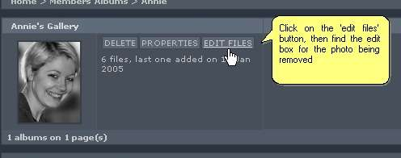
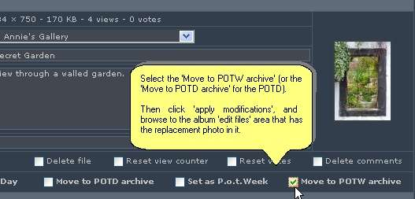
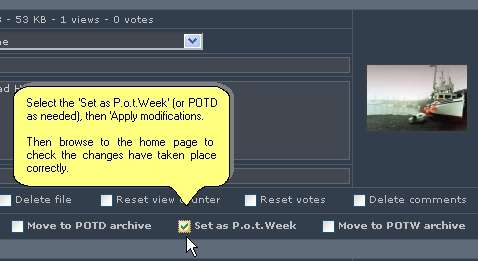
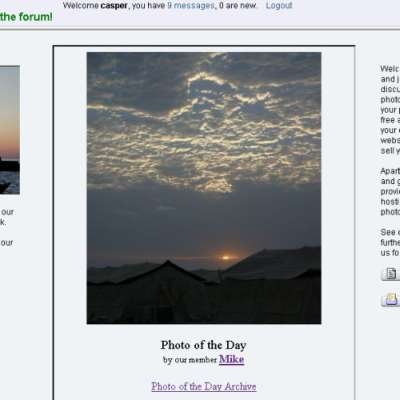

Coppermine Picture-of-the-Day/Week Plugin
Originally written as a mod/hack by Casper
Converted to a 1.4.x plugin by Paver
How to set the photo of the day/week.
First, you need to remove the previous photo set as the POTD/W.
In admin mode, browse to the albums list which contains the photo, and click on the 'Edit files' button next to the album thumb.

Now find the edit section for the previous POTD/W. Click in the relevent 'move to archive' box.

Now make sure you click the 'Apply Modifications' button at the bottom of the page
Now browse to the edit files area of the album the new POTD/W is in, and set the new POTD/W the same way.

Again, make sure you 'Apply modifications'.
The pic is now set, and will display wherever you have set it to display.
There are various ways to display the photo of the day or week.
To display it on the gallery index page, simply enter your config admin page, and add 'potd' or 'potw' (or both) to the 'Contents of main page'.
You can view the image in its own page, by browsing to:
'/gallery_url/index.php?file=potd/week' or '/gallery_url/index.php?file=potd/day',
where you will see it as a normal gallery page;
To show these images within pages outside the gallery, use:
'/gallery_url/plugins/potd/showdaypic.php' or '/gallery_url/plugins/potd/showweekpic.php'
Example, I use this code, to show this on a site home page:
<iframe src="gallery/plugins/potd/showdaypic.php" width="440px" height="530px" frameborder="1" align="center" valign="middle">
</iframe>
And this is the result:

Included are also 2 files which let you call thumbnails, rather than the normal size image:
'/gallery_url/plugins/potd/daythumb.php' and '/gallery_url/plugins/potd/weekthumb.php'
These can be used in exactly the same way as above to call into an iframe or directly.
Well, that's it, enjoy.